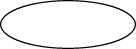

The Java 2D API provides several classes that define common geometric objects such as points, lines, curves, and rectangles. These geometry classes are part of the
java.awt.geom package.
The
PathIterator interface defines methods for retrieving elements from a path.
The
Shape interface provides a set of methods for describing and inspecting geometric path objects. This interface is implemented by the
GeneralPath class and other geometry classes.
All examples represented in this section create geometries by using java.awt.geom package and then render them by using the
Graphics2D class. To begin you obtain a Graphics2D object, for example by casting the Graphics parameter of the paint() method.
public void paint (Graphics g) {
Graphics2D g2 = (Graphics2D) g;
...
}
The
Point class creates a point representing a location in (x,y)
coordinate space. The subclasses Point2D.Float and Point2D.Double provide correspondingly float and double precision for storing the coordinates of the point.
//Create Point2D.Double Point2D.Double point = new Point2D.Double(x, y);
To create a point with the coordinates 0,0 you use the default constructor, Point2D.Double().
You can use the setLocation method to set the position of the point as follows:
setLocation(double x, double y) – To set the location of the point- defining coordinates as double values.setLocation(Point2D p) – To set the location of the point using the coordinates of another point.Also, the Point2D class has methods to calculate the distance between the current point and a point with given coordinates, or the distance between two points.
The
Line2D class represents a line segment in (x, y) coordinate space. The Line2D. Float and Line2D.Double subclasses specify lines in float and double precision. For example:
// draw Line2D.Double g2.draw(new Line2D.Double(x1, y1, x2, y2));
This class includes several setLine() methods to define the endpoints of the line.
Aternatively, the endpoints of the line could be specified by using the constructor for the Line2D.Float class as follows:
Line2D.Float(float X1, float Y1, float X2, float Y2)Line2D.Float(Point2D p1, Point2D p2)Use the
Stroke object in the Graphics2D class to define the stroke for the line path.
The java.awt.geom package enables you to create a quadratic or cubic curve segment.
The
QuadCurve2D class implements the Shape interface. This class represents a quadratic parametric curve segment in (x, y) coordinate space. The QuadCurve2D.Float and QuadCurve2D.Double subclasses specify a quadratic curve in float and double precision.
Several setCurve methods are used to specify two endpoints and a control point of the curve, whose coordinates can be defined directly, by the coordinates of other points and by using a given array.
A very useful method, setCurve(QuadCurve2D), sets the quadratic curve with the same endpoints and the control point as a supplied curve. For example:
// create new QuadCurve2D.Float QuadCurve2D q = new QuadCurve2D.Float(); // draw QuadCurve2D.Float with set coordinates q.setCurve(x1, y1, ctrlx, ctrly, x2, y2); g2.draw(q);
The
CubicCurve2D class also implements the
Shape interface. This class represents a cubic parametric curve segment in (x, y) coordinate space. CubicCurve2D.Float and CubicCurve2D.Double subclasses specify a cubic curve in float and double precision.
The CubicCurve2D class has similar methods for setting the curve as the QuadraticCurve2Dclass, except with a second control point. For example:
// create new CubicCurve2D.Double
CubicCurve2D c = new CubicCurve2D.Double();
// draw CubicCurve2D.Double with set coordinates
c.setCurve(x1, y1, ctrlx1,
ctrly1, ctrlx2, ctrly2, x2, y2);
g2.draw(c);
Classes that specify primitives represented in the following example extend the RectangularShape class, which
implements the Shape interface and adds a few methods of its own.
These methods enables you to get information about a shape’s location and size, to examine the center point of a rectangle, and to set the bounds of the shape.
The
Rectangle2D class represents a rectangle defined by a location (x, y) and dimension (w x h).
The Rectangle2D.Float and Rectangle2D.Double subclasses specify a rectangle
in float and double precision. For example:
// draw Rectangle2D.Double
g2.draw(new Rectangle2D.Double(x, y,
rectwidth,
rectheight));
The
RoundRectangle2D class represents a rectangle with rounded corners defined by a location (x, y), a dimension (w x h), and the width and height of the corner arc. The RoundRectangle2D.Float and RoundRectangle2D.Double subclasses specify a round rectangle in float and double precision.
The rounded rectangle is specified with following parameters:
To set the location, size, and arcs of a RoundRectangle2D object, use the method setRoundRect(double a, double y, double w, double h, double arcWidth, double arcHeight). For example:
// draw RoundRectangle2D.Double
g2.draw(new RoundRectangle2D.Double(x, y,
rectwidth,
rectheight,
10, 10));
The
Ellipse2D class represents an ellipse defined by a bounding rectangle. The Ellipse2D.Float and Ellipse2D.Double subclasses specify an ellipse in float and double precision.
Ellipse is fully defined by a location, a width and a height. For example:
// draw Ellipse2D.Double
g2.draw(new Ellipse2D.Double(x, y,
rectwidth,
rectheight));

To draw a piece of an ellipse, you use the
Arc2D class. This class represents an arc defined by a bounding rectangle, a start angle, an angular extent, and a closure type. The Arc2D.Float and Arc2D.Double subclasses specify an ellipse in float and double precision.
The Arc2D class defines the following three types of arcs, represented by corresponding constants in this class: OPEN, PIE and CHORD.
Several methods set the size and parameters of the arc:
Point2D and Dimension2DArc2DAlso, you can use the setArcByCenter method to specify an arc from a center point, given by its coordinates and a radius.
// draw Arc2D.Double
g2.draw(new Arc2D.Double(x, y,
rectwidth,
rectheight,
90, 135,
Arc2D.OPEN));
The
ShapesDemo2D.java code example contains implementations of all described geometric primitives. For more information about classes and methods represented in this section, see the
java.awt.geom specification.